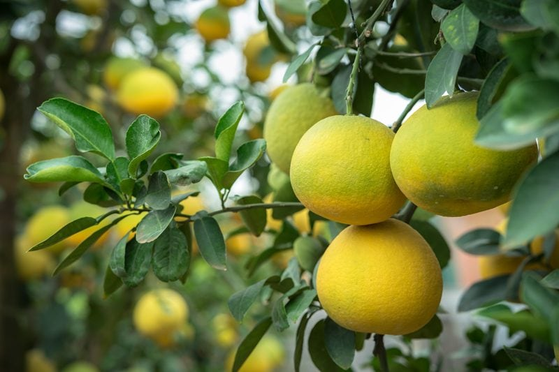
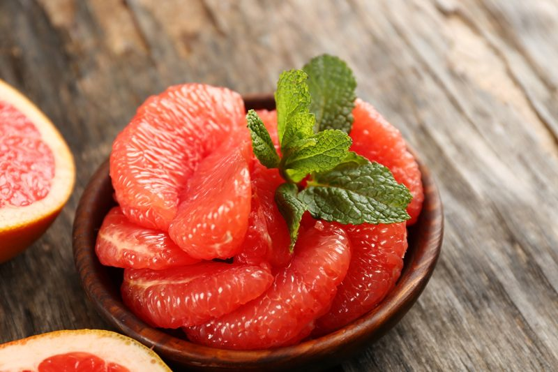
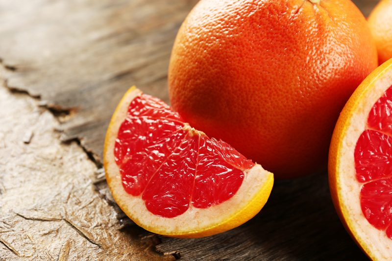

Grapefruit – Pucker Up Buttercup
I grew up loving grapefruit. Though I have to admit that I was one of those who would cut them in half and sprinkle sugar on top. I guess that’s fairly typical for a child. As I started tacking on the years of wisdom, my tastebuds shifted, and I found myself drawn to the lip-puckering enjoyment of their tart and sour taste. I know the pith and membrane hold nutrients, but my all-time favorite way of eating them is to remove the membrane from each segment. It’s not so much to remove the bitterness, but because I find the individual pulp cells so beautiful and fun to squish between my teeth.

Grapefruit trees are evergreen (keep their leaves year-round) and grow to around 16–49 ft tall. The leaves are thin, glossy, dark green, and roughly 6″ long. It produces white, four-petaled flowers, and when they blossom, they produce white, sweet smelling aromatic.
The fruit is yellow-orange skinned and generally grows to 4–6″ in diameter. The flesh is segmented and acidic, varying in color depending on the cultivars, which include white, pink, and red pulps of varying sweetness (generally, the redder varieties are the sweetest).
Harvesting Grapefruit
Since grapefruits originated in the sub-tropics, they are cold sensitive. When they are ready to be picked depends greatly on differences in temperature. For example, grapefruit may take seven to eight months to ripen in one part of California and up to thirteen months in another part. Grapefruit is sweeter in regions of hot days and warm to hot nights and more acidic in cooler areas.
Not all grapefruits will be ripe at exactly the same moment. This is where color is an indicator of ripeness. Grapefruit should be harvested when at least half of the peel has started to turn yellow or pink. Mature grapefruit may still be green in color, but a better bet is to wait until the fruit turns hue. Remember, the longer the fruit stays on the tree, the sweeter it becomes; so be patient.
Fruits on low branches are picked by hand from the ground; higher fruits are usually harvested by workers on ladders who snap the stems or clip the fruits as required. When ready to pick, simply grasp the ripe fruit in your hand and gently give it a twist until the stem detaches from the tree.
Painted Tree Trunks
Have you ever noticed trees that are painted white on the bottom? Citrus trees have relatively thin bark. Left to their own, they grow more like a shrub than a tree, with shoots growing up at the base and covering the trunk. Without that shading, they need the protection of paint. Once the canopy of the tree is thick and broad enough to shade the trunk the paint isn’t necessary.
Different Types of Grapefruit
White Grapefruit
- Also known as the “yellow” grapefruit, it is one of the tartest and sour of all types.
- Inside, their juice is rich in vitamins and nutrients, extremely high in vitamin C, and they often have several seeds.
- White Grapefruit is oblong in shape, with a flat-shaped top and bottom.
- Varieties include Duncan, Oro Blanco, Golden, Wheeney, Sweetie, Melogold, and the most popular, Marsh.
Pink Grapefruit
- This one has the perfect balance of tart and sweet.
- It gets its pinkish pigment from lycopene, a powerful cancer-fighting phytonutrient, and beta-carotene, which is converted to vitamin A in your body.
- The taste is sweeter than the white grapefruit and is unbelievably juicy.
- Varieties include Foster, Henderson, Marsh Pink, Ray Ruby, Redblush, and Shambar.
Red Ruby Grapefruit
- The flesh of this fruit is a vibrant, juicy ruby.
- Its flavor is similar to that of the pink grapefruit.
- They typically have few seeds, are tender to eat, with a melting-type of interior flesh.
- It’s also a good source of vitamin A, which can help prevent cancer.
- Its rich color is due to high levels of lycopene and beta-carotene.
- Varieties include Rio Red, Flame and Star Ruby.
Oro Blanco
- This grapefruit’s Spanish name translates to “white-gold” in English.
- It has electric-green or yellow skin and a very thick rind.
- It is arguably the least bitter and most sweet out of all of the grapefruits listed here.
- These grapefruits are seedless.

Consider the Peel for Nutrients
- Grapefruit flesh is a rich source of vitamins and antioxidants, but don’t leave out the nutritional benefits of the peel.
- According to the Memorial Sloan Kettering Cancer Center, the peel of citrus fruits contains one of the highest concentrations of pectin, a type of soluble fiber.
- Grapefruits, mandarin, and lemons (just the peel) contain naringenin, which can stimulate the liver to burn excess fat and reduce blood sugar, triglycerides, and cholesterol; it’s such a powerful antioxidant. (1,2)
- Grapefruit is a source of vitamin C, which is more potent in the peel. You’ll also find vitamins A, B6 and B5, calcium, riboflavin, thiamin, niacin, and folate.
- You can dehydrate the peel. Once dried, place in a blender or grinder to turn the dried peels into powder. You can add this mild citrus flavor to any dish. You can also combine it with other herbs and spices to make a sodium-free seasoning blend.
- With a zester or microplane remove as much of the outer, colored layer of grapefruit as possible, leaving behind the pith. Stir the zest into vinaigrettes, marinades, cheesecakes, or iced tea.
- Grapefruit’s essential oil is found in its peel and is extracted via a cold-pressing process. The bright, clean scent promotes balance from everyday mental fatigue while aiding sharp mental function.
Overall Tree Uses that Don’t go to Waste
- Factory waste – The waste from grapefruit packing plants has long been converted into molasses for cattle.
- Seed hulls – After oil extraction, the hulls can be used for soil conditioning, or combined with the dried pulp, as cattle feed.
- Wood – Old grapefruit trees can be salvaged for their wood. The sapwood is pale-yellow or nearly white, the heartwood yellow to brownish, hard, fine-grained, and useful for domestic purposes. Mainly, pruned branches and felled trees are cut up for firewood.
- Medicinal Uses: An essence prepared from the flowers is taken to overcome insomnia, also as a stomachic, and cardiac tonic. The pulp is considered an effective aid in the treatment of urinary disorders. Leaf extractions have shown antibiotic activity. (1)

Cautions to Take with Grapefruit
Grapefruit is Acidic
- Dental professionals also remind us that acidic foods, like grapefruit, can lead to erosion of protective tooth enamel. Be sure to rinse your mouth with water, followed by brushing and flossing after you eat highly acidic foods.
For those who have GERD
- If you suffer from GERD, eating grapefruit may result in increased symptoms of heartburn. This is because when your stomach refluxes, a stomach enzyme called pepsin also increases and rises. Pepsin is not affected by anti-reflux medication. Therefore, if you have or are prone to GERD, you may need to minimize or eliminate grapefruit from your diet.
Drug Interactions
- Grapefruit can cause serious adverse reactions with cholesterol drugs (statins), antihistamines, blood pressure drugs, psychiatric medications, intestinal medications, immune suppressants, pain medications, Viagra, HIV medications, and cardiac medications to name a few.
Inhibits Enzymes CYP3A4
- Grapefruit can inhibit an enzyme in the intestines called CYP3A4, which plays a key role in breaking down certain medications in the body. It has been shown to result in extra-high, even potentially dangerous levels of certain drugs in the body when consumed at the same time.
Disclaimer
This website is not intended to provide medical advice. All content, including text, graphics, images, and information available on this site is for general informational, entertainment, and educational purposes only. The content is not intended to be a substitute for professional diagnosis or treatment. The author of this site is not responsible for any adverse effects that may occur from the application of the information on this site. You are encouraged to make your own healthcare decisions, based on your research and in partnership with a qualified healthcare professional.
© AmieSue.com